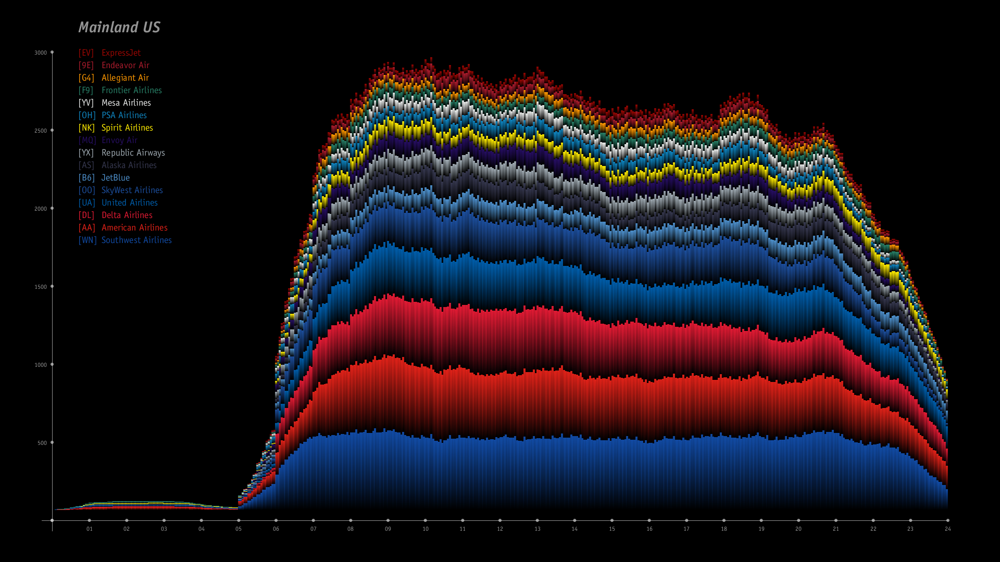
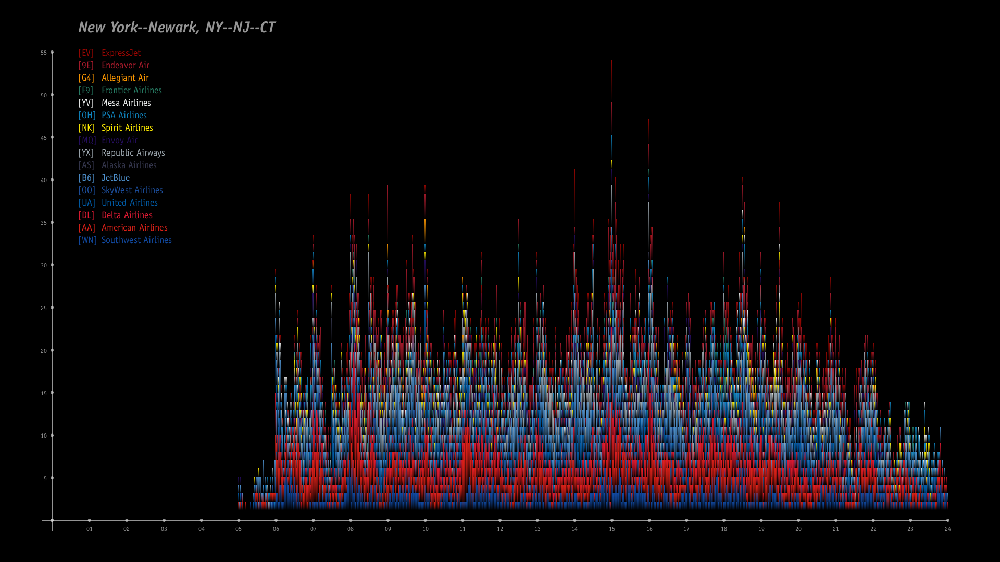

Across the Mainland
[2020]
Across the Mainland explores the multiplicity of data at the intersection of representation and analysis. This hobby project animates domestic air travel over one 24-hour period, and uses the derivative data produced each frame to generate graphs of overhead flight schedules for all 423 U.S. Census-designated urban areas.
Animation depicting domestic mainland U.S. flights on July 1, 2019; plane color corresponds to the
dominant color of the airline logo.
Alternative visualization of domestic mainland U.S. flights highlighting geographic connections.
Animated heat map depicting density of domestic mainland U.S. flights; color ramp from purple to
yellow to red.

Mainland U.S. air traffic volume per minute on July 1, 2019; organized by airline.

New York area air traffic volume per minute on July 1, 2019; organized by airline.

Chicago area air traffic volume per minute on July 1, 2019; organized by airline.

Philadelphia area air traffic volume per minute on July 1, 2019; organized by airline.

Air traffic volume per minute for the top 9 urban areas; organized by population.